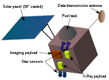
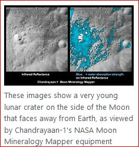

"THE MOON" with the history of the early solar system etched on it beckons mankind from time immemorial to admire its marvels and discover its secrets. Understanding the moon provides a pathway to unravel the early evolution of the solar system and that of the planet earth.
Through the ages, the Moon, our closest celestial body has aroused curiosity in our mind much more than any other objects in the sky. This led to scientific study of the Moon, driven by human desire and quest for knowledge. This is also reflected in the ancient verse
Chandrayaan-1 was the first Indian lunar probe under Chandrayaan program. It was launched by the Indian Space Research Organisation in October 2008, and operated until August 2009. The mission included a lunar orbiter and an impactor. India launched the spacecraft using a PSLV-XL rocket on 22 October 2008 at 00:52 UTC from Satish Dhawan Space Centre, at Sriharikota, Andhra Pradesh. The mission was a major boost to India's space program, as India researched and developed its own technology in order to explore the Moon The vehicle was inserted into lunar orbit on 8 November 2008.
Spacecraft

Chandrayaan spacecraft was a cube of side 1.5 m and was based on the I-1-K bus which was used in the IRS series of satellites. It also carried the Moon Impact Probe which landed on the moon on November 14, 2009.
Specifications
Mass:1,380 kg (3,042 lb) at launch, 675 kg (1,488 lb) at lunar orbit and 523 kg (1,153 lb) after releasing the impactor.
Dimensions-Cuboid in shape of approximately 1.5 m (4.9 ft)
Communication-X band, 0.7 m (2.3 ft) diameter dual gimballed parabolic antenna for payload data transmission. The Telemetry, Tracking & Command (TTC) communication operates in S band frequency.
Power-The spacecraft was mainly powered by its solar array, which included one solar panel covering a total area of 2.15 × 1.8 m (7.1 × 5.9 ft) generating 750 W of peak power, which was stored in a 36 A•h lithium-ion battery for use during eclipses.
Propulsion-The spacecraft used a bipropellant integrated propulsion system to reach lunar orbit as well as orbit and altitude maintenance while orbiting the Moon. The power plant consisted of one 440 N engine and eight 22 N thrusters. Fuel and oxidiser were stored in two tanks of 390 litres (100 US gal) each.
Navigation and control-The craft was 3-axis stabilised with two star sensors, gyros and four reaction wheels. The craft carried dual redundant bus management units for attitude control, sensor processing, antenna orientation, etc.
Launch Vehicle
Chandrayaan was launched aboard PSLV C-11 on October 22, 2008, which was an XL variant of ISRO's PSLV, one of world's most reliable launchers. PSLV was later used to launch the Mars Orbiter Mission in 2013.
Objectives
The mission had the following stated objectives.
- to design, develop, launch and orbit a spacecraft around the Moon using an Indian-made launch-vehicle
-
to conduct scientific experiments using instruments on the spacecraft which would yield data:
- the preparation of a three-dimensional atlas (with high spatial and altitude resolution of 5–10 m or 16–33 ft) of both the near and far sides of the Moon
- for chemical and mineralogical mapping of the entire lunar surface at high spatial resolution, mapping particularly the chemical elements magnesium, aluminium, silicon, calcium, iron, titanium, radon, uranium, and thorium
- to increase scientific knowledge
- to test the impact of a sub-satellite (Moon Impact Probe – MIP) on the surface of the Moon as a fore-runner for future soft-landing missions
Goals
In order to reach its objective, the mission defined these goals:
- High-resolution mineralogical and chemical imaging of the permanently shadowed north- and south-polar regions
- Searching for surface or sub-surface lunar water-ice, especially at the lunar poles
- Identification of chemicals in lunar highland rocks
- Chemical stratigraphy of the lunar crust by remote sensing of the central uplands of large lunar craters, and of the South Pole Aitken Region (SPAR), an expected site of interior material
Results
Chandrayaan's NASA Instrument Moon Mineralogy Mapper has confirmed the magma ocean hypothesis, meaning that the Moon was once completely molten. In its 10-month orbit around the Moon, Chandrayaan-1's X-ray Spectrometer (C1XS) detected titanium, confirmed the presence of calcium, and gathered the most accurate measurements yet of magnesium, aluminium and iron on the lunar surface.
- Lunar water discovery 
- Lunar water production
- Lunar Caves
- Tectonism
On 18 November 2008, the Moon Impact Probe was released from Chandrayaan-1 at a height of 100 km (62 mi). During its 25-minute descent, Chandra's Altitudinal Composition Explorer (CHACE) recorded evidence of water in 650 mass spectra readings gathered during this time. On 24 September 2009 Science journal reported that the Nasa Instrument Moon Mineralogy Mapper (M3) on Chandrayaan-1 had detected water ice on the Moon. But, on 25 September 2009, ISRO announced that the MIP, another instrument on board Chandrayaan-1, had discovered water on the Moon just before impact and had discovered it 3 months before NASA's M3.The announcement of this discovery was not made until NASA confirmed it.
According to European Space Agency (ESA) scientists, the lunar regolith (a loose collection of irregular dust grains making up the Moon's surface) absorbs hydrogen nuclei from solar winds. Interaction between the hydrogen nuclei and oxygen present in the dust grains is expected to produce hydroxyl (HO-) and water (H2O).
Chandrayaan-1 imaged a lunar rille, formed by an ancient lunar lava flow, with an uncollapsed segment indicating the presence of a lunar lava tube, a type of large cave below the lunar surface. The tunnel, which was discovered near the lunar equator, is an empty volcanic tube, measuring about 2 km (1.2 mi) in length and 360 m (1,180 ft) in width.
Data from the microwave sensor (Mini-SAR) of Chandrayaan-1 processed using the image analysis software ENVI, has revealed a good amount of past tectonic activity on the lunar surface. The researchers think that the faults and fractures discovered could be features of past interior tectonic activity coupled with meteorite impacts.
CHANDRAYAAN-1 VS CHANDRAYAAN-2: INSTRUMENTS ONBOARD
There were 11 scientific instruments onboard the Chandrayaan-1 spacecraft. Five of them were Indian while the others were from European Space Agency (ESA), National Aeronautics and Space Administration (Nasa) and Bulgarian Academy of Sciences. Chandrayaan-2's orbiter carries eight scientific payloads for mapping the lunar surface and to study the exosphere (outer atmosphere) of the Moon. The lander carries three scientific payloads to conduct surface and subsurface science experiments.